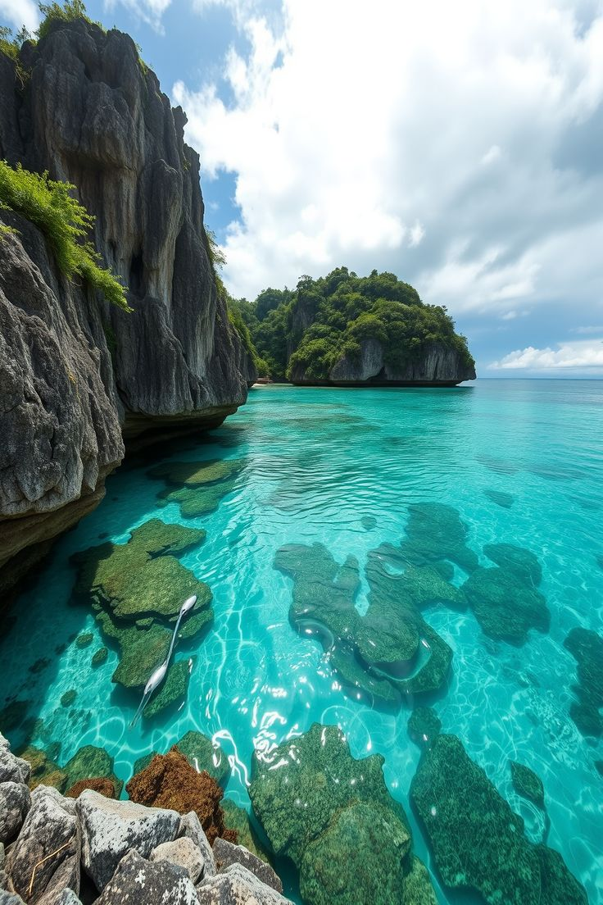

Siargao
The surfing capital of the Philippines, with lagoons, rock pools and island hopping.
Home / Destinations / Siargao · Surigao del Norte, Caraga
About Siargao
Siargao is a teardrop-shaped island on the Pacific side of the country. Its reef breaks, especially Cloud 9, have drawn surfers from around the world and host international surfing competitions.
You do not need to surf to enjoy it. Palm-lined roads, calm lagoons and small islands make the island easy to explore by scooter or boat.
What to do
- Cloud 9: watch the surfers from the boardwalk, or take a lesson at an easier break.
- Island hopping: Naked Island, Daku Island and Guyam Island are the classic stops.
- Sugba Lagoon and Magpupungko: clear water for swimming, and tidal rock pools at low tide.
Travel tip
Tide and swell change what you can do each day, so ask a local operator before booking a tour or a surf lesson.
Photo gallery
Watch: Siargao
If the embedded video shows Error 153, open this website through a local web server (for example VS Code Live Server) instead of opening the HTML file directly.
Open this video on YouTube (opens in a new tab)
Want more? Search for Siargao videos on YouTube (opens in a new tab).
Things to book
Surf lessons
Learn to surf at an easier break, or watch the pros at Cloud 9.
Find tours for Surf lessons (opens in a new tab)Island hopping
Naked Island, Daku Island and Guyam Island in one trip.
Find tours for Island hopping (opens in a new tab)Sugba Lagoon tour
Clear water, kayaking and paddleboarding.
Find tours for Sugba Lagoon tour (opens in a new tab)Magpupungko rock pools
Swim in tidal pools at low tide.
Find tours for Magpupungko rock pools (opens in a new tab)
Plan and book your trip to Siargao
Compare tours and places to stay on these booking sites. Prices and availability change, so check the details before you pay.